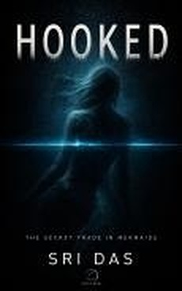
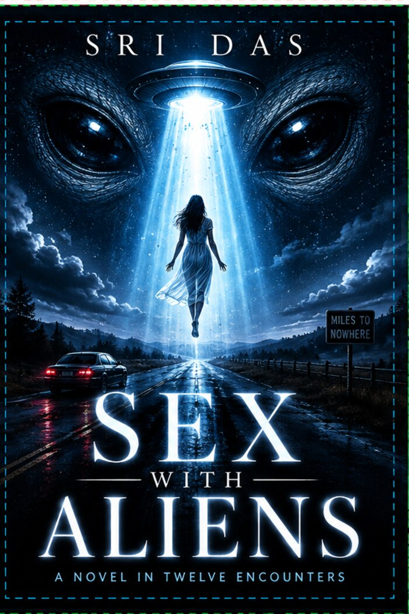
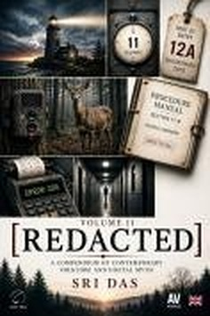
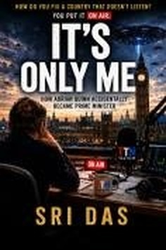
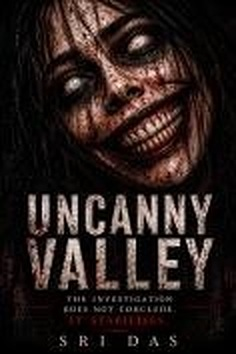
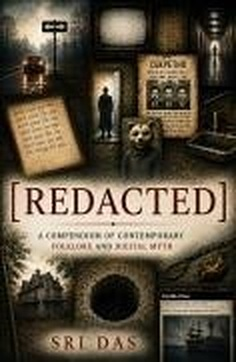
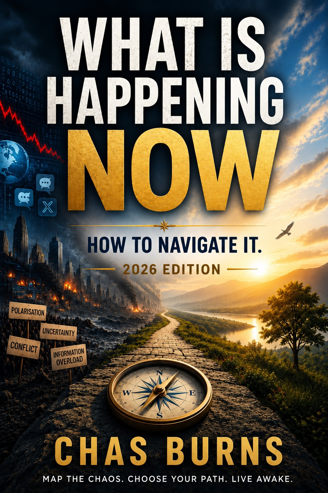
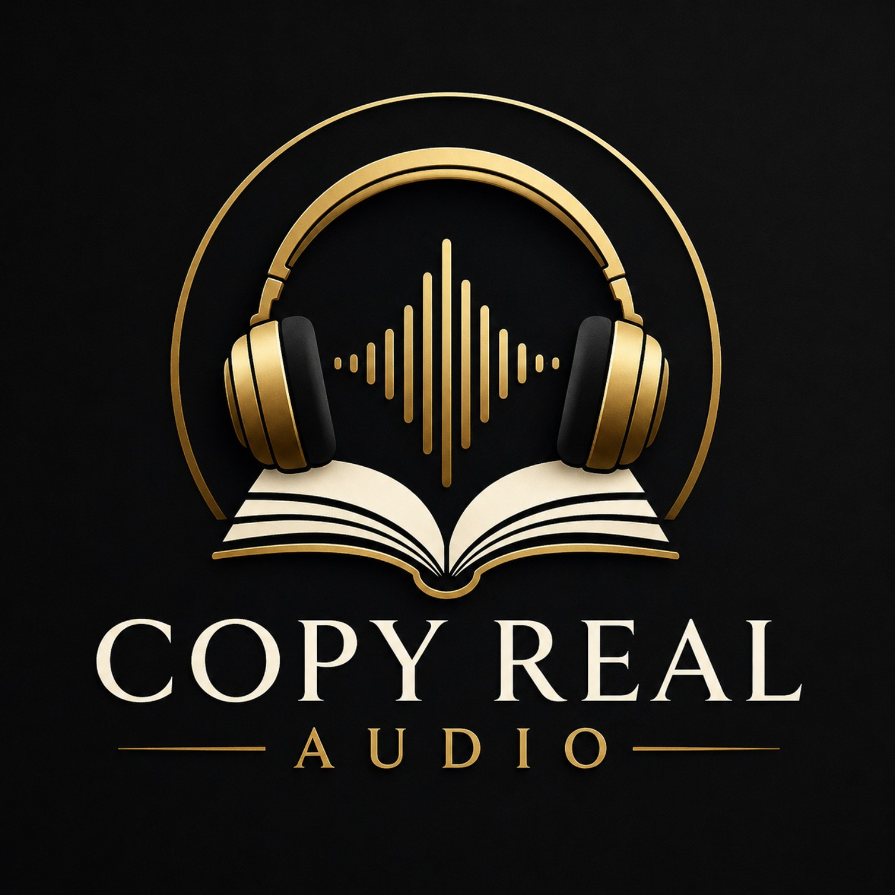

Free tools · No account
Make progress today
Title ideas, a structured book brief, writer's block help, repetition scanning and KDP diagnostics. Browser-based tools keep your text on your device.
Explore Creator StudioOriginal stories. Restored classics. Illustrated editions. Audiobooks produced through Copy Real Audio.



Whether you're still working out the title or have a finished manuscript, Copy Real offers practical publishing tools and defined professional services. You keep control of your work. We quote larger production jobs individually.
Title ideas, a structured book brief, writer's block help, repetition scanning and KDP diagnostics. Browser-based tools keep your text on your device.
Explore Creator StudioTwelve tailored title proposals, three subtitle directions, a draft back-cover blurb and concise positioning advice for one book concept.
Order via secure Stripe checkoutA personalised written assessment of running time, likely production routes, estimated costs and illustrative break-even scenarios.
See the review and orderEPUB, paperback, hardback and audio editions, plus manuscript assessments and problematic KDP files. Agree the deliverables before commissioning work.
Get a publishing quotationThe £39 and £79 pilot offers are limited to three initial purchases each. Personalised work is not an instant download. Service information · Privacy notice · Contact Copy Real.
These are existing Copy Real covers recovered from the publishing archive and the previous ChasBurns.com build.





Copy Real Audio is the audiobook division of Copy Real. Explore the latest Copy Real Audio editions and choose where to listen.
Original fiction, illustrated editions, handbooks, children’s books and classics.
Browse 41 recovered covers →The audiobook division of Copy Real: Pure Narration and Cinematic Editions.
Explore audio →Sex With…, Trion, [REDACTED], Actors Companion and connected publishing lines.
Explore series →Copy Real uses one restrained publishing framework so literary fiction, horror, speculative work, children’s publishing, classics and audio can keep their own visual identities without looking unrelated.
About Copy Real